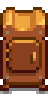

Dehydrator
Jump to navigation
Jump to search
| Dehydrator | |
 |
|
| Place 5 pieces of fruit or edible mushrooms inside to dry them. | |
| Information | |
| Source | Crafting |
| Sell Price | Cannot be sold |
| Crafting | |
| Recipe Source | Pierre's for |
| Ingredients | |
The Dehydrator is a type of Artisan Equipment that is used to create Dried Mushrooms, Dried Fruit, or Raisins. It can be crafted after purchasing the recipe from Pierre for  10,000g. It is also a possible reward as the 12th prize from the Prize Machine in the Mayor's Manor (50% chance). One is included in the Farm Cave if the player chooses the mushroom option.
10,000g. It is also a possible reward as the 12th prize from the Prize Machine in the Mayor's Manor (50% chance). One is included in the Farm Cave if the player chooses the mushroom option.
Products
Dehydrator requires five Mushrooms (except Red Mushroom) or Fruits of the same type and quality.
| Image | Name | Description | Ingredients | Processing Time | Sell Price | Energy / Health |
|---|---|---|---|---|---|---|
| Dried Mushrooms | A package of gourmet mushrooms. | 5 of Any Mushroom (except Red Mushroom) | 7.5 × Mushroom Base Price + |
3 × base Mushroom Energy/Health restoration | ||
| Dried Fruit | Chewy pieces of dried fruit. | 5 of Any Fruit (except Grapes) | 7.5 × Fruit Base Price + |
3 × base Fruits Energy/Health restoration | ||
| Raisins | It's said to be the Junimos' favorite food. | 5 Grapes |
Notes
- The quality of the dried product is always normal and not affected by the quality of items used.
- Inedible fruits become edible after being turned into Dried Fruit. The formula for Energy is: [Base fruit sell price ÷ 2 × 0.5 × 5], or [Base fruit sell price × 1.25]. This is the same as the calculation for base silver quality sell price, but rounded instead of truncated.
- The dehydrator effectively makes the Mushrooms or Fruits sell at gold quality price +5 each.
- Truffles are not classified as mushrooms and therefore cannot be placed into the Dehydrator.
History
- 1.6: Introduced.